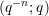
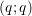
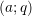
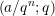

| Up | Next | Prev | PrevTail | Tail |
Authors: Harald Böing and Wolfram Koepf
This package is an implementation of the q-analogues of Gosper’s and Zeilberger’s29 algorithm for indefinite, and definite summation of q-hypergeometric terms, respectively.
An expression ak is called a q-hypergeometric term, if ak∕ak-1 is a rational function with respect to qk. Most q-terms are based on the q-shifted factorial or qpochhammer. Other typical q-hypergeometric terms are ratios of products of powers, q-factorials, q-binomial coefficients, and q-shifted factorials that are integer-linear in their arguments.
Our package supports the input of the following elementary q-functions:
Furthermore it is possible to use an abbreviation for the generalized q-hypergeometric series (basic generalized hypergeometric series, see e. g. [?], Chapter 1) which is defined as:
Another variation is the bilateral basic hypergeometric series (see e. g. [?], Chapter 5) that is defined as
The summands of those generalized q-hypergeometric series may be entered by
respectively.
The q-Gosper algorithm[?] is a decision procedure, that decides by algebraic calculations whether or not a given q-hypergeometric term ak has a q-hypergeometric term antidifference gk, i. e. ak = gk - gk-1 with gk∕gk-1 rational in qk. The ratio gk∕ak is also rational in qk — an important fact which makes the rational certification (see § 16.48.4) of Zeilberger’s algorithm possible. If the procedure is successful it returns gk, in which case we call ak q-Gosper-summable. Otherwise no q-hypergeometric antidifference exists. Therefore if the q-Gosper algorithm does not return a q-hypergeometric antidifference, it has proved that no such solution exists, an information that may be quite useful and important.
Any antidifference is uniquely determined up to a constant, and is denoted by
Finding gk given ak is called indefinite summation. The antidifference operator Σ is the inverse of the downward difference operator ∇ak = ak - ak-1. There is an analogous summation theory corresponding to the upward difference operator Δak = ak+1 - ak.
In case, an antidifference gk of ak is known, any sum ∑ k=mnak can be easily calculated by an evaluation of g at the boundary points like in the integration case:
The q-Zeilberger algorithm [?] deals with the definite summation of q-hypergeometric terms f(n,k) wrt. n and k:
Zeilberger’s idea is to use Gosper’s algorithm to find an inhomogeneous recurrence equation with polynomial coefficients for f(n,k) of the form
|
| (16.91) |
where g(k)∕f(k) is rational in qk and qn. Assuming finite support of f(n,k) wrt. k (i. e. f(n,k) = 0 for any n and all sufficiently large k) we can sum equation (16.91) over all k ∈ ℤ. Thus we receive a homogeneous recurrence equation with polynomial coefficients (called holonomic equation) for s(n):
|
| (16.92) |
At this stage the implementation assumes that the summation bounds are infinite and the input term has finite support wrt. k. If those input requirements are not fulfilled the resulting recursion is probably not valid. Thus we strongly advise the user to check those requirements.
Despite this restriction you may still be able to get valuable information by the program: On request it returns the left hand side of the recurrence equation (16.92) and the antidifference g(k) of equation (16.91).
Once you have the certificate g(k) it is trivial (at least theoretically) to prove equation (16.92) as long as the input requirements are fulfilled. Let’s assume somone gives us equation (16.91). If we divide it by f(n,k) we get a rational identity (in qn and qk) —due to the fact that g(k)∕f(n,k) is rational in qn and qk. Once we confirmed this identity we sum equation (16.91) over k ∈ ℤ:
|
| (16.93) |
Again we exploit the fact that g(k) is a rational multiple of f(n,k) and thus g(k) has finite support which makes the telescoping sum on the right hand side vanish. If we exchange the order of summation we get equation (16.92) which finishes the proof.
Note that we may relax the requirements for f(n,k): An infinite support is possible as long as limk→∞g(k) = 0. (This is certainly true if limk→∞p(k)f(k) = 0 for all polynomials p(k).)
For a quite general class of q-hypergeometric terms (proper q-hypergeometric terms) the q-Zeilberger algorithm always finds a recurrence equation, not necessarily of lowest order though. Unlike Zeilberger’s original algorithm its q-analogue more often fails to determine the recursion of lowest possible order, however (see [?]).
If the resulting recurrence equation is of first order
s(n) turns out to be a q-hypergeometric term (as a and b are polynomials in qn), and a q-hypergeometric solution can be easily established using a suitable initial value.
If the resulting recurrence equation has order larger than one, this information can be used for identification purposes: Any other expression satisfying the same recurrence equation, and the same initial values, represents the same function.
Our implementation is mainly based on [?] and on the hypergeometric analogue described in [?]. More examples can be found in [?], [?], some of which are contained in the test file qsum.tst.
The QSUM package must be loaded by:
The qgosper operator is an implementation of the q-Gosper algorithm.
Examples: The following two examples can be found in [?] ((II.3) and (2.3.4)).
Here are some other simple examples:
The qsumrecursion operator is an implementation of the q-Zeilberger algorithm. It tries to determine a homogeneous recurrence equation for summ(n) wrt. n with polynomial coefficients (in n), where
If successful the left hand side of the recurrence equation (16.92) is returned.
There are three different ways to pass a summand f(n,k) to qsumrecursion:
i. e. upper and lower are lists of upper and lower parameters of the generalized q-hypergeometric function. The third form is handy if you have any additional factors.
For all three instances the following variations are allowed:
By default qsumrecursion will search for recurrences of order from 1 to 5. (The global variable qsumrecursion_recrange!* controls this behavior, see § 16.48.8.)
As a first example we want to consider the q-binomial theorem:
provided that |z|,|q| < 1. It is the q-analogue of the binomial theorem in the sense that
For a := q-n with n ∈ ℕ our implementation gets:
Notice that the input requirements are fulfilled. For n ∈ ℕ the summand is zero for all k > n as k = 0 and the k-term in the denominator makes the summand vanish for all k < 0.
With the switch qsumrecursion_certificate it is possible to get the antidifference gk described above. When switched on, qsumrecursion returns a list with five entries, see § 16.48.8. For the last example we get:
Let’s define the list entries as {rec,cert,f,k,dir}. If you substitute summ(n + j) by f(n + j,k) in rec then you obtain the left hand side of equation (16.91), where f is the input summand. The function g(k) := f*cert is the corresponding antidifference, where dir states which sort of antidifference was calculated downward_antidifference or upward_antidifference, see also § 16.48.8. Those informations enable you to prove the recurrence equation for the sum or supply you with the necessary informations to determine an inhomogeneous recurrence equation for a sum with nonnatural bounds.
For our last example we can now calculate both sides of equation (16.91):
Thus we have proved the validity of the recurrence equation.
As some other examples we want to consider some generalizations of orthogonal polynomials from the Askey–Wilson–scheme [?]: The q-Laguerre (3.21), q-Charlier (3.23) and the continuous q-Jacobi (3.10) polynomials.
The setting of qsum_nullspace (see [?] and § 16.48.8) results in a faster calculation of the recurrence equation for this example.
An essential step in the algorithms introduced above is to decide whether a term ak is q-hypergeometric, i. e. if the ratio ak∕ak-1 is rational in qk.
The procedure qsimpcomb provides this facility. It tries to simplify all exponential expressions in the given term and applies some transformation rules to the known elementary q-functions as qpochhammer, qbrackets, qbinomial and qfactorial. Note that the procedure may fail to completely simplify some expressions. This is due to the fact that the procedure was designed to simplify ratios of q-hypergeometric terms in the form f(k)∕f(k - 1) and not arbitrary q-hypergeometric terms.
E. g. an expression like -n ⋅n is not recognized as 1, despite the transformation formula
which is valid for n ∈ ℕ.
Note that due to necessary simplification of powers, the switch precise is (locally) turned off in qsimpcomb. This might produce wrong results if the input term contains e. g. complex variables.
The following synomyms may be used:
The following switches can be used in connection with the QSUM package:
If it is set on, instead of simply returning the resulting recurrence equation (for the sum)—if one exists—qsumrecursion returns a list {rec,cert,f,k,dir} with five items: The first entry contains the recurrence equation, while the other items enable you to prove the recurrence a posteriori by rational arithmetic.
If we denote by r the recurrence rec where we substituted the summ-function by the input term f (with the corresponding shifts in n) then the following equation is valid:
or
if dir=downward_antidifference or dir=upward_antidifference respectively.
The global variable qsumrecursion_recrange!* controls for which recursion orders the procedure qsumrecursion looks. It has to be a list with two entries, the first one representing the lowest and the second one the highest order of a recursion to search for. By default it is set to {1,5}.
The following messages may occur:
or
(If you do not pass a range as an argument to qsumrecursion the default range in qsumrecursion_recrange!* will be used.)
With all the examples we tested, our procedures decided properly whether the input term was q-hypergeometric or not. However, we cannot guarantee in general that qsimpcomb always returns an expression that looks rational in qk if it actually is.
[1] Askey R. and Wilson, J.: Some Basic Hypergeometric Orthogonal Polynomials that Generalize Jacobi Polynomials. Memoirs Amer. Math. Soc. 319, Providence, RI, 1985.
[2] Gasper, G.: Lecture Notes for an Introductory Minicourse on q-Series. 1995. To obtain from ftp://unvie6.un.or.at/siam/opsf_new/ 00index_by_author.html.
[3] Gasper, G. and Rahman, M.: Basic Hypergeometric Series, Encyclopedia of Mathematics and its Applications, 35, (G.-C. Rota, ed.), Cambridge University Press, London and New York, 1990.
[4] Gosper Jr., R. W.: Decision procedure for indefinite hypergeometric summation. Proc. Natl. Acad. Sci. USA 75, 1978, 40–42.
[5] Knuth, D. E.: The Art of Computer Programming, Seminumerical Algorithms. 2nd ed., 1981, Addison-Wesley Publishing Company.
[6] Koepf, W.: Algorithms for m-fold hypergeometric summation. Journal of Symbolic Computation 20, 1995, 399–417.
[7] Koepf, W.: REDUCE package for indefinite and definite summation. SIGSAM Bulletin 29, 1995, 14–30.
[8] Koornwinder, T. H.: On Zeilberger’s algorithm and its q-analogue: a rigorous description. J. of Comput. and Appl. Math. 48, 1993, 91–111.
[9] Koekoek, R. und Swarttouw, R.F.: The Askey-scheme of Hypergeometric Orthogonal Polynomials and its q-analogue. Report 94–05, Technische Universiteit Delft, Faculty of Technical Mathematics and Informatics, Delft, 1994.
[10] Paule, P. und Riese, A.: A Mathematica q-analogue of Zeilberger’s algorithm based on an algebraically motivated approach to q-hypergeometric telescoping. Fields Proceedings of the Workshop ‘Special Functions, q-Series and Related Topics’, organized by the Fields Institute for Research in Mathematical Sciences at Univerisity College, 12-23 June 1995, Toronto, Ontario,179–210.
[11] Zeilberger, D.: A fast algorithm for proving terminating hypergeometric identities. Discrete Math. 80, 1990, 207–211.
[12] Zeilberger, D.: The method of creative telescoping. J. Symbolic Computation 11, 1991, 195–204.
| Up | Next | Prev | PrevTail | Front |